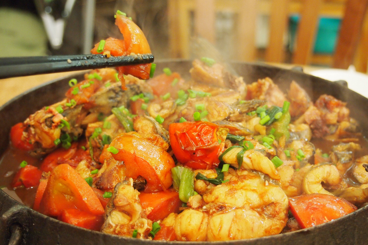
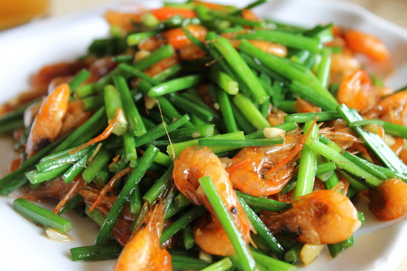
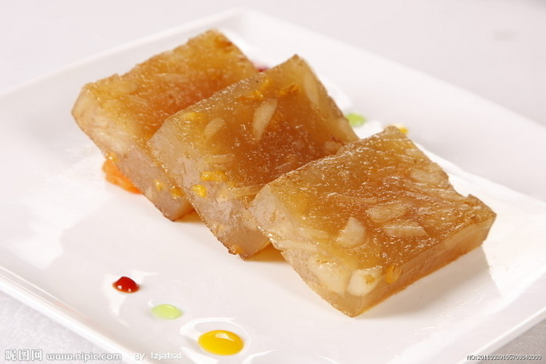

-

Гуйлиньская рисовая лапша
высокая температура:1581Рисовая лапша Гуйлинь широко известна своим уникальным вкусом. Его мастерство изысканно: сначала высококачественный рис перемалывается в кашицу, расфасовывается по пакетам и фильтруется, а затем раскатывается в тесто, готовится и прессуется в круглые коренья или хлопья. Огород называют рисовой лапшой, а хлопья – резаной мукой, широко известной как рисовая лапша, которая отличается белизной, нежностью, мягкостью и освежающим вкусом. Его едят разными способами. Самое главное - это производство рассола, а мастерство разное.Он грубо сваренный со свининой, говяжьей костью, луо хань го и различными приправами, с сильным ароматом.
-

Пиво Ли Ривер Фиш
высокая температура:1138Пиво Лицзянская рыба — известное местное блюдо в Яншо. Свежего крупного карпа из реки Лицзян в Яншо отбирают, сначала обжаривают на сыром чайном масле, произведенном в горной местности северного Гуйлиня, а затем варят на медленном огне в лучшем пиве, произведенном в Гуйлине.Он имеет уникальный хрустящий и нежный вкус, что вызовет аппетит.. В частности, рыбья чешуя обжаривается в хрустящую корочку и покрывается соусом, что является совершенно новым опытом на кончике языка.
-

восемнадцать
высокая температура:555Самое известное в Гуйлине «восемнадцать пивоварений», то есть восемнадцать видов вареных овощей. Так называемые «фаршированные овощи» — местный особый способ употребления в пищу: добавление различных приправ к мясному фаршу, а затем наполнение им «шубки» из разных овощей или ракушек, либо приготовление на пару, либо тушение, и приготовление. вино". В частности, есть начинка из улиток, начинка из тофу, начинка из помело, начинка из побегов бамбука, начинка из ароматных грибов, начинка из грибов, начинка из цветов тыквы, начинка из яиц, начинка из горькой тыквы, начинка из баклажанов, начинка из перца, начинка из восковой тыквы, начинка из таро, старый чеснок. начинка, томатная начинка фаршированная, ростки фасоли фаршированные, масло тофу фаршированное, овощная фаршированная фаршированная.
-

Липу таро мясо
высокая температура:120Липу таро мясо — известное традиционное банкетное блюдо, в котором используется настоящее гуйлиньское липу-таро, свиная грудинка со шкуркой, гуйлиньский ферментированный соевый творог и различные приправы. Отдельно обжарьте во фритюре свиную грудинку и нарезанный кубиками Липу таро, затем положите свиную грудинку кожей вниз, положите в миску попеременно с кусочками таро и готовьте на пару до готовности, переверните на другую тарелку и подавайте. Он характеризуется золотистым цветом, мягкими и освежающими ломтиками таро и ароматным ароматом. Он выполняет функции отвода тепла, удаления огня и увлажнения кожи.
-

Вегетарианские жареные креветки из реки Ли
высокая температура:140Жареные лицзянские креветки — типичное блюдо провинции Гуйлинь. Его готовят из речных креветок реки Лицзян в Гуйлине и обжаривают с добавлением небольшого количества гуйлиньского вина Саньхуа. Из-за прозрачной воды реки Лицзян мясо креветок реки Лицзян нежное и чистое, а оригинальный вкус делает это блюдо ярко-красным, как драгоценный камень, вкус свежий и нежный, а аромат не сильный. все еще может ощутить чистоту и сладость воды реки Лицзян.
-

Торт «Подкова»
высокая температура:96Основным ингредиентом является рисовая мука.Поместите рисовую муку в деревянную форму, прочную, как подкова, оберните сердцевину коричневой сахарной пудрой, подковообразным или кунжутным порошком, пропарьте на сильном огне, выньте и съешьте. легкий в приготовлении, сладкий и острый, мягкий и вкусный. Как правило, сейчас люди больше делятся и покупают их. Разбросаны по улицам. Пешеходы приходят и уходят, а покупать и есть очень удобно.
-

жареный поросенок
высокая температура:220Жареный поросенок - фирменное блюдо Гуйлиня. Поросят-сосунов нужно выращивать с клейким рисом или рисом, чтобы их мясо было тонким и нежным. Затем его бережно обжаривают с уникальным мастерством и умелыми пожарными, чтобы сделать кожицу желтой и прозрачной, затем разрезают на кусочки и подают на тарелке, смешав с соусом из зеленого лука и белым сахаром.Легкие, красота и питательный эффект.
-

Улитка Гуйлинь
высокая температура:558Поскольку улитка Гуйлинь растет на рисовом поле, она получила свое название. Отличается большой жирностью и приятным вкусом. Вареная улитка должна сопровождаться особым кислым перцем Гуйлиня, а затем обжариваться с различными ингредиентами, такими как лук, имбирь и вино Саньхуа. При варке хвост у улитки нужно отбить, чтобы облегчить вкус улитки при варке, а также мясо улитки легко сосать.